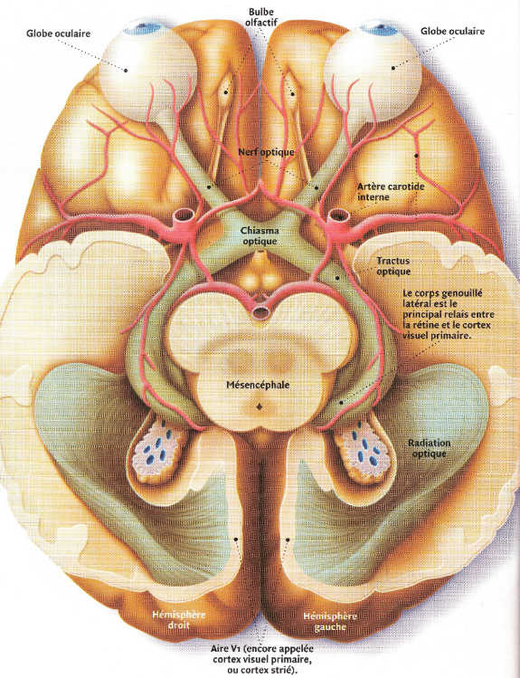
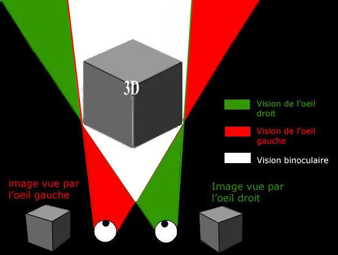

La rétine est composée de deux éléments essentiels : un tapis de
cellules photosensibles
et un réseau de cellules
permettant de transférer les informations.Ce tapis de cellules est sensible à la lumière et le transmet en informations nerveuses et ce réseau d’informations fait circuler l’information très rapidement jusqu’au cerveau.
La fovéa est le point le plus important de la rétine : c’est-à-dire le lieu où les rayons concentrés par l’œil arrivent principalement. C’est le lieu où l’on a la meilleure vue (le fond de l’œil).

Le cheminement des informations des globes oculaires à l’aire du cerveau dédiée à la vision peut être comparé à une autoroute des informations.
Les informations sortent du globe oculaire via les nerfs optiques, arrivent au
chiasma optique
: un croisement des informations visuelles. En effet, il faut savoir que les informations fournies par l’œil gauche sont interprétés par l’hémisphère droit du cerveau et vice-versa. L’intérêt du chiasma est de protéger la fonction visuelle : Les informations, bien que principalement dirigées vers l’hémisphère opposé, peuvent tout de même être transmises à l’hémisphère du même côté. Donc si l’un des nerfs optiques est endommagé, on peut tout de même voir.Après le chiasma, les informations circulent à travers les deux voies du
tractus optique
et du corps genouillé latéral
qui amène directement à une partie arrière au cerveau, le cortex visuel primaire dans chaque hémisphère du cerveau.Les connaissances sur l'interprétation des images par le cerveau est très flou, même pour les scientifiques. En effet, de manière générale, le cerveau demeure une région inconnue du corps.
Cependant, on peut dire avec une quasi-certitude, à défaut de comment, ce qui se passe dans le cerveau en termes simples. Chaque œil transmet l'information qu'il a reçu à son
hémisphère opposé
. Chaque hémisphère "partage" ces informations. Ils confondent les deux images et il apparait ainsi trois zones de vision: Aux extrémités, la vision d'un seul œil, ou vision monoculaire, au centre, la vision binoculaire.Chaque point de la zone de
vision binoculaire
peut former un triangle avec les deux yeux, et grâce au théorème de Pythagore, on peut grossièrement calculer les distances, et les profondeurs. Par conséquent, en plus des dimensions horizontale et verticale, nous avons la profondeur dans cette zone, et nous voyons en 3D. En plus du calcul des longueurs, cette zone binoculaire permet de déterminer approximativement les formes des objets. En effet, chaque œil n'a pas le même angle de vue, sur l'objet, et on voit les arrières des carrés par exemple. Les objets alors sont vus en relief.Dans les zones de
vision monoculaire
, on ne peut pas former de triangle entre un point et les 2 yeux, donc nous n'avons pas les notions de formes et de distances. Néanmoins, le cerveau s'emploie à donner une distance approximative et une forme probable aux objets. Dans cette zone, les objets ne sont pas clairs, mais cela ne nous dérange nullement car la lumière n'est pas dirigée vers la fovéa (voir I) A)), et c'est donc une position inconfortable. 
La vision au quotidien est un exercice tout-à-fait naturel et pourtant pas si anodin. Le cerveau possède un rôle très important pour reformer une image en relief à partir de 2 images en 2D de chaque œil.